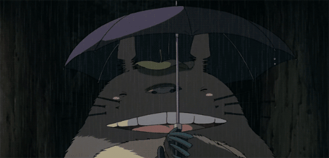
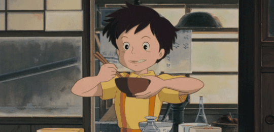
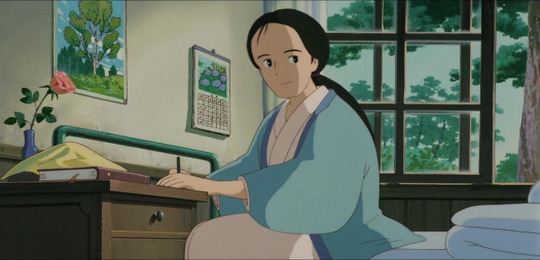
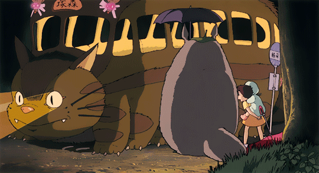
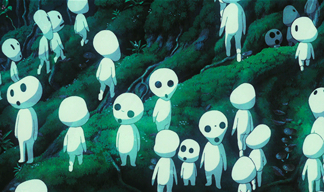

- Mei Kusakabe
- Totoro 
- Satsuki Kusakabe 
- Yasuko Kusakabe 
- Catbus 
- Kodama 
- Susuwatari

Mei Kusakabe (草壁 メイ, Kusakabe Mei) is the four-year-old protagonist little sister of Satsuki in My Neighbor Totoro and Mei and the Kittenbus. She is the daughter of Tatsuo and Yasuko Kusakabe.
Totoro (トトロ) or Big Totoro (大トトロ, Ō Totoro), also known as Miminzuku (ミミンズク), is the title tetartagonist in Studio Ghibli's film My Neighbor Totoro, as well as its sequel, Mei and the Kittenbus. He is the mascot of Studio Ghibli.
Satsuki Kusakabe (草壁 サツキ Kusakabe Satsuki), is one of the protagonists in My Neighbor Totoro.
Yasuko Kusakabe is a supporting character in My Neighbor Totoro. She is the mother of Satsuki and Mei Kusakabe and sister in law of satsuki and Mei's auntie, and the wife of Tatsuo Kusakabe. Presumably, she suffers from tuberculosis; her sickness being the reason why she and her family moved to the rural country side. She was admitted to the local hospital which offered the best care for the illness, and the family decided it would be best for her to recuperate in a more fresh and sunny environment.
She is voiced by Lea Salonga in the more popular Disney version, who is also famous for providing the singing voice of Fa Mulan and Jasmine in the very popular Disney films, Mulan and Aladdin.
The Catbus (ネコバス, Nekobasu) is a transporting animal bus-looking character in My Neighbor Totoro. He is met by Mei, Satsuki and Totoro. (though Totoro could have known him for years since he already knows to take it to get back to his home under the camper tree).
Bō (坊, Bō, lit. "boy"), also known as Boh or Baby, is the son of Yubaba and nephew of Zeniba in the film, Spirited Away.

The Soot Sprites (すすワタリ, Susuwatari, lit. "Travelling Soot"), also known as All Blacky (まっくろくろすけ, Makkuro-Kurosuke) are spirits that appear in the films My Neighbor Totoro and Spirited Away.